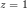
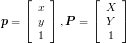
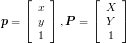
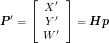
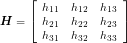
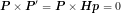
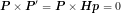
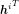
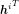
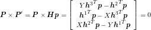

ホモグラフィとは、平面を射影変換を用いて別の平面に射影することを言います。 二次元画像の変形などに使われます。 二次元画像の変形方法としてはアフィン変換がありますが、ホモグラフィはその拡張です。 アフィン変換は長方形を平行四辺形に変形させることしか出来ませんが、 ホモグラフィを使えば台形へ変形させることができます。
ホモグラフィについて考える前に、 ホモグラフィの基本的な考え方である射影変換について考えましょう。
コンピュータで3Dを扱う場合、コンピュータ内部では3Dをごちゃごちゃいじったとしても、ほとんどの場合最終的な出力は画面(2D)です。 そのため、3Dを2Dに変換する作業が必要となります。 それを実現するのが射影変換です。
平面上の点 を
を に変換することを考えます。

に変換することを考えます。

このときホモグラフィ変換は次式で表されます。  ここで、行列Hはホモグラフィ行列といい、この変換を決めるパラメータです。 
と は数値的には等しくありませんが、
射影変換によって同じ点となるので、意味的には同じものです。
実際の変換先の座標を求めるのには次式を用います。
は数値的には等しくありませんが、
射影変換によって同じ点となるので、意味的には同じものです。
実際の変換先の座標を求めるのには次式を用います。

ホモグラフィ行列がわかれば、上に書いた式を用いて座標変換が行えます。 では、逆に、座標変換の結果だけわかっていて、それからホモグラフィ行列を求めることはできないでしょうか。 これについて考えてみましょう。
がに変換されることがわかっているとします。
上に書いたように、実際の変換結果とホモグラフィ変換の結果は
 という関係が成り立っている必要があります。
このままでは少し扱いにくいので、この関係を少し別の形に書き換えてみましょう。
この式は、位置ベクトルPとP'は長さは違うけど向きは同じ、つまり平行であるということを表しています。
ベクトルの外積の定義を思い出すと、このことは次のように書くことができます。

という関係が成り立っている必要があります。
このままでは少し扱いにくいので、この関係を少し別の形に書き換えてみましょう。
この式は、位置ベクトルPとP'は長さは違うけど向きは同じ、つまり平行であるということを表しています。
ベクトルの外積の定義を思い出すと、このことは次のように書くことができます。

このままでは計算しづらいので、を成分表示になおしてみましょう。
![\[ \bm{P}'=\left[ \begin{array}{c} X' \\ Y' \\ W' \end{array}\right] =\bm{H}\bm{p}= \left[ \begin{array}{c} {\bm{h}^1}^T \bm{p} \\ {\bm{h}^2}^T \bm{p} \\ {\bm{h}^3}^T \bm{p} \end{array}\right] \]](../../../../memo/geometry/homography/eqn/7b588483ce3b8dfa11c1cfa932f57067.gif) ここで、は
ここで、は の行ベクトルです。
の行ベクトルです。
これを使うとPとP'の条件は以下のようにかけます。

ホモグラフィ行列の項をくくり出すと次のようになります。

3つの方程式が出てきましたが、このうち2つの線形和で残りの1つを表すことができるので、
2つのだけ満たせば十分です。
 具体的に成分表示すると次のようになります。
具体的に成分表示すると次のようになります。
![\[\left[ \begin{array}{ccccccccc} 0 & 0 & 0 & x & y & 1 & -Yx & -Yy & -Y \\ x & y & 1 & 0 & 0 & 0 & -Xx & -Xy & -X \end{array} \right] \left[ \begin{array}{c} h_{11} \\ h_{12} \\ h_{13} \\ h_{21} \\ h_{22} \\ h_{23} \\ h_{31} \\ h_{32} \\ h_{33} \end{array} \right]=0 \]](../../../../memo/geometry/homography/eqn/3d433c1a4780982b69805c832e80a063.gif)
ホモグラフィ行列は定数倍しても最終結果は同じになるので、 求めなければならないパラメータは8つです。 1つの点と点の関係がわかると2本方程式が立てられるので、 4つの点がわかれば連立方程式を解いてホモグラフィ行列を決定することができます。
JavascriptとCSS3を使ったホモグラフィ変換のデモです。 画像の4隅の丸をドラッグ＆ドロップすると、それに合わせてホモグラフィ変換します。
CSS3から対応した3D変換機能を使っています。 3D変換に対応したブラウザとグラフィックボードが必要です。